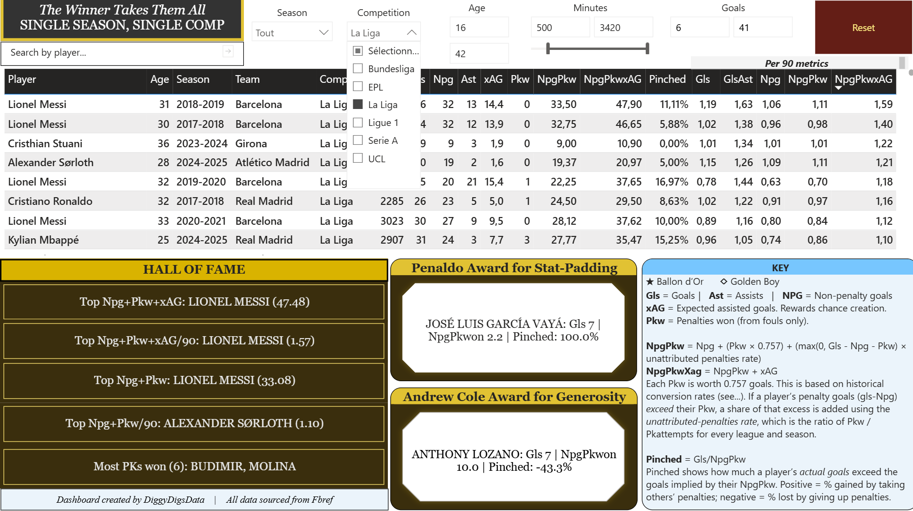

Description placeholder for this post.
Article published in Shared Future News about Verne Harris’ talk on reconciliation.
Article published in Shared Future News discusing YLT survey results in relation to CRED: community relations, equality and diversity education.
My undergraduate dissertation on Sport and National Identiy in Ireland, which gathered survey data from 1,286 respondents and analysed it in Excel and SPSS.

University essay: How a society deals with its past has a major determining influence on whether that society will achieve long-term peace and stability’ (Sarkin, 2001).…
Exploring bear population culls in Romania. Originally published in the Brasov Visitor (now-defunct).